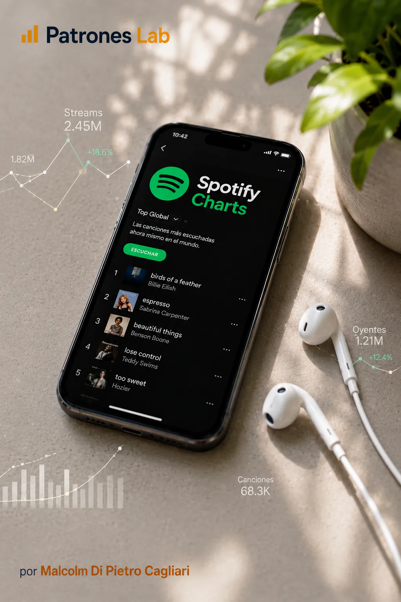
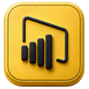
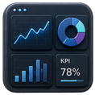

Proyecto 13 · Dashboard Power BI
Dashboard en Power BI · Spotify Charts
Análisis de rankings musicales de Spotify Charts con datos públicos de canciones, artistas, álbumes y mercados, orientado a explorar streams, presencia en charts, liderazgo temporal y distribución territorial mediante un dashboard interactivo en Power BI.



CONTEXTO Y OBJETIVO
Construir un dashboard analítico en Power BI a partir de datos públicos de Spotify Charts, integrando canciones, artistas, álbumes, fechas y mercados para entender cómo se distribuye la presencia musical en distintos charts.
El proyecto busca analizar qué canciones concentran mayor volumen de streams, qué artistas sostienen presencia en rankings, cómo cambia el liderazgo a lo largo del tiempo y qué mercados explican mayor actividad dentro del dataset.
DATOS Y DIAGNÓSTICO
- Uso de datos públicos de Spotify Charts como fuente principal para analizar rankings diarios de canciones, rankings diarios de artistas y rankings semanales de álbumes.
- Preparación de un modelo de datos con tablas de hechos, dimensiones y relaciones orientadas al análisis en Power BI, separando canciones, artistas, álbumes, países, fechas e información de apoyo visual.
- Construcción de indicadores para medir streams totales, apariciones en charts, mejores posiciones, entradas al Top 10, presencia por mercado, concentración de canciones líderes y evolución temporal de los rankings.
- Exploración de patrones de consumo musical a partir de visualizaciones interactivas, filtros por período, país, grupo de mercado, artista y canción.
ENTREGA Y APRENDIZAJE
La entrega conecta preparación de datos, modelado relacional y visualización en Power BI para construir una lectura clara de los rankings musicales de Spotify.
El resultado esperado es un dashboard interactivo orientado a portfolio, con una estética oscura, lectura ejecutiva y gráficos enfocados en detectar concentración, liderazgo, presencia territorial y evolución de los charts.